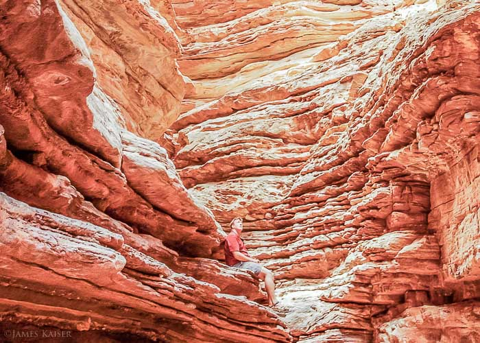

The Grand Canyon is an awesome place. Its overwhelming size and its intricate and colorful landscape make it without question one of the seven marvels of the natural world.While it is not the deepest canyon in the world, it is unmatched throughout the world for the vistas it offers to visitors.

Geologically it is hugely significant because of the thick sequence of ancient rocks that are beautifully preserved and exposed in the walls of the canyon. These rock layers record much of the early geologic history of the North American continent.


Grand Canyon Expeditions Company has been running the river in the Grand Canyon for over 56 years. Offering both
motorized and dory trips, each journey covers 277-miles of canyon waters and cruises through 200 white water rapids.
Throughout your trip, you can traverse hidden waterfalls, secret canyons, and sleep under the stars.
You’ll even have unparalleled access to less-traveled areas, including a natural amphitheater called Redwall
Cavern and the Havasu Creek Confluence, the largest tributary of the Colorado River. It’s instantly recognizable
by its turquoise blue waters and this confluence connects you to places like Mooney Falls and Beaver Falls. And yes,
it’s definitely worth the hike.


 Yosemite
Yosemite Seattle
Seattle